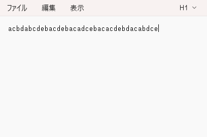

#include <BleKeyboard.h>
BleKeyboard bleKeyboard("ESP32 Keyboard");
const int button0Pin = 15;
const int button1Pin = 2;
bool pushed0 = false;
bool pushed1 = false;
bool isInput0 = false;
bool isInput1 = false;
void setup() {
pinMode(button0Pin, INPUT_PULLUP);
pinMode(button1Pin, INPUT_PULLUP);
Serial.begin(115200);
Serial.println("Starting BLE work!");
bleKeyboard.begin();
}
void loop() {
if (bleKeyboard.isConnected()) {
//ボタン0の入力処理
int button0Value = digitalRead(button0Pin);
if(button0Value == LOW){
if(pushed0 ==false){
bleKeyboard.print("a");
pushed0 = true;
isInput0 = true;
}
}
else{
if(pushed0){
bleKeyboard.print("c");
}
pushed0 = false;
}
//ボタン1の入力処理
int button1Value = digitalRead(button1Pin);
if(button1Value == LOW){
if(pushed1 ==false){
bleKeyboard.print("b");
pushed1 = true;
isInput1 = true;
}
}
else{
if(pushed1){
bleKeyboard.print("d");
}
pushed1 = false;
}
//入力情報からの処理
if(pushed0 ==false && pushed1 == false){
if(isInput0 && isInput1){
//2つ押して2つはなした
bleKeyboard.print("e");
}
isInput0 = false;
isInput1 = false;
}
}
delay(10);
}
